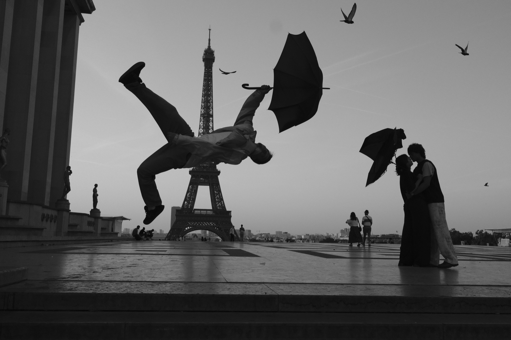
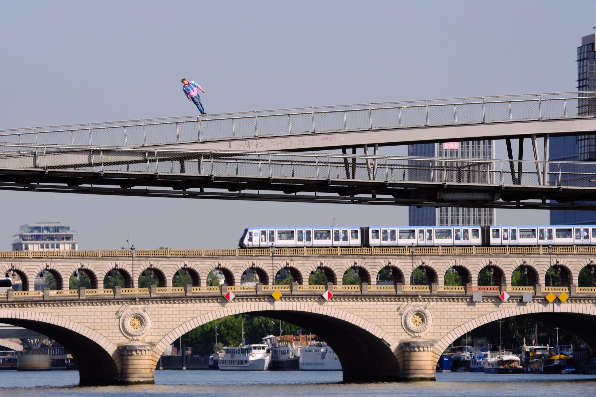
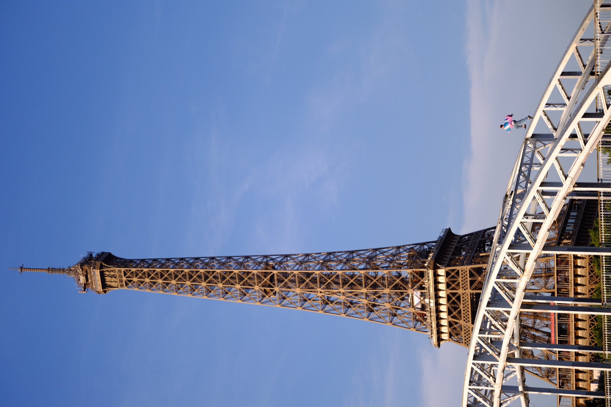
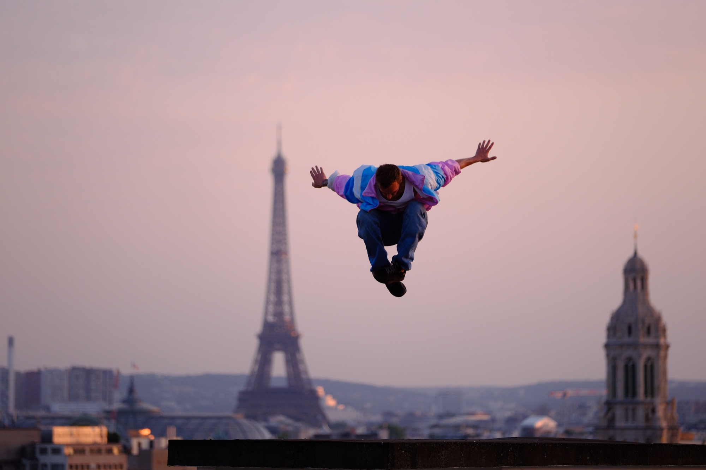
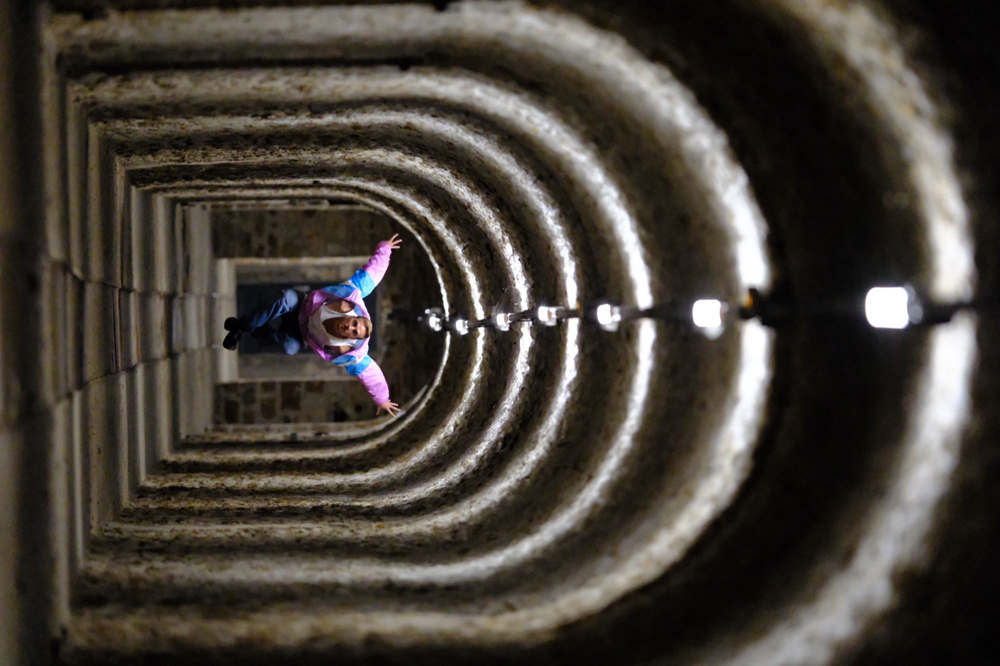

Mbappé Project · X-T6
Straight Out of Camera
Five frames showcasing the in-camera JPEG engine — no retouching, no post-processing. Featuring the new FORTIA SP film simulation, Velvia, and ACROS with Green Filter.
ACROS · Green Filter

DSF1360 · RAF + JPG
ACROS — Green Filter
FORTIA SP

DSCF4121 · RAF + JPG
FORTIA SP — new film simulation
FORTIA SP

DSCF4462 · RAF + JPG
FORTIA SP — new film simulation
FORTIA SP

DSCF4684 · RAF + JPG
FORTIA SP — new film simulation
Velvia

DSCF3075 · RAF + JPG
Velvia — Fujichrome